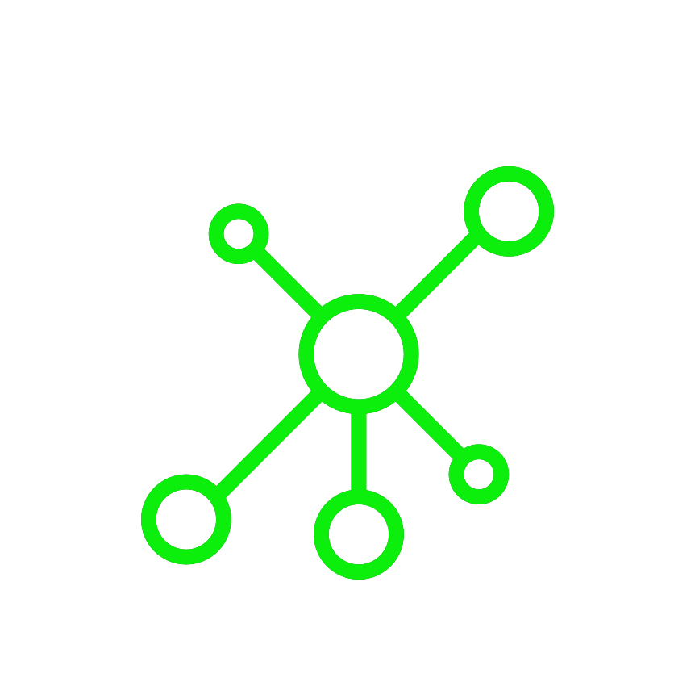

C Y B E R - S E C U R I T Y
I M P A C T
H A C K I N G
B R E A C H E S
D E F E N C E
Targetted Spear Phishing Campaign
Creation of "Attack Station One"
University Network Map Copied

Database Compromised